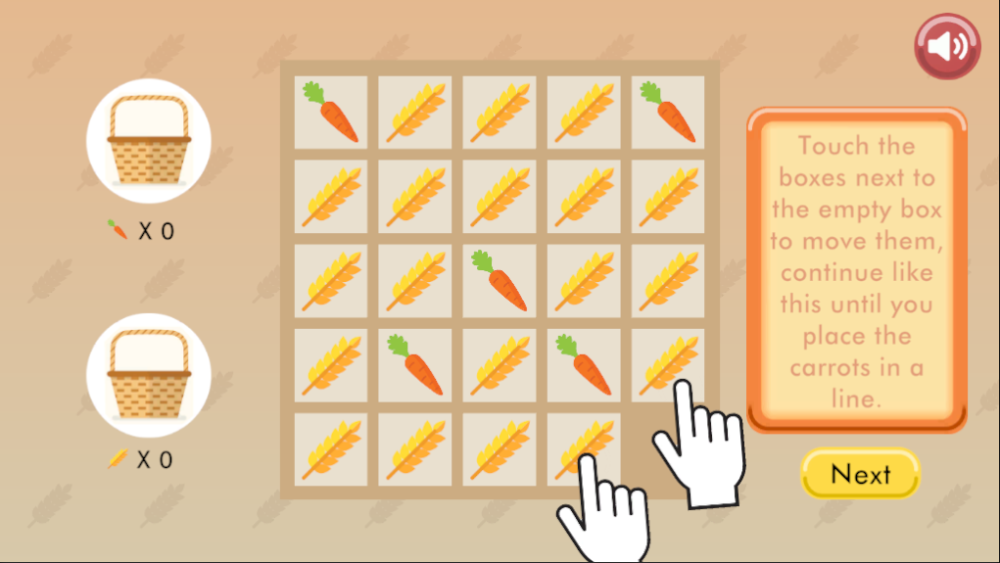

Farm Day
Farm Day es un Videojuego educativo que desarrolle trabajando para Angry Cat Games para la empresa Legend Of Learning. El juego se trata de resolver minijuegos y puzzles con el objetivo de aprender conceptos sobre química y fisica.
El proyecto fue desarrollado con Unity en su totalidad, los scripts estan programados en C# y se hizo uso de archivos json para gestionar la carga de diferentes idiomas.
Algunos de los minijuegos constan de talar un arbol sin que los troncos golpeen al granjero, colocar ingredientes en un bowl en un determinado orden para cocinar un pastel, acomodar tuberias para lograr hacer compost, entre otras mecanicas.

